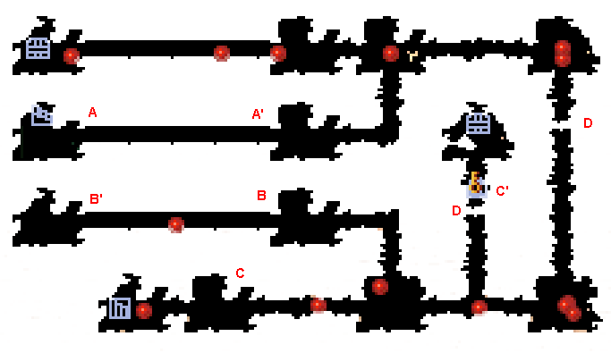
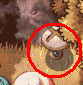

|  | |
| A | A地点の風船を壊すと、A'地点までたくさんトゲが降ってきます。 トゲよりも早くA'地点を通過しないと先へ進めなくなります。 |
| B | B地点の風船を壊すと、B'地点までトゲが降ってきます。 それと同時に通路に敵が現れますが、全て無視をしてB'地点まで駆け込んでください。 そしてアイテムを回収したり、タルを壊したりした後、扉を開き敵を倒してください。 |
| C | C地点の風船を壊すと、C'地点までたくさんトゲが降ってきます。 風船を割り、C'地点にトゲが落ちるまではC'地点の扉が開いています。あと一撃で風船が割れるというときに、爆弾をセットするなど策を練っておくと安全です。 |
| D  |
Dではフックロープが必要となります。 |
| F | F地点の風船を割ると、FからF'の間にあるトゲが動き出します。 ぶつからないように注意して通過してください。 |